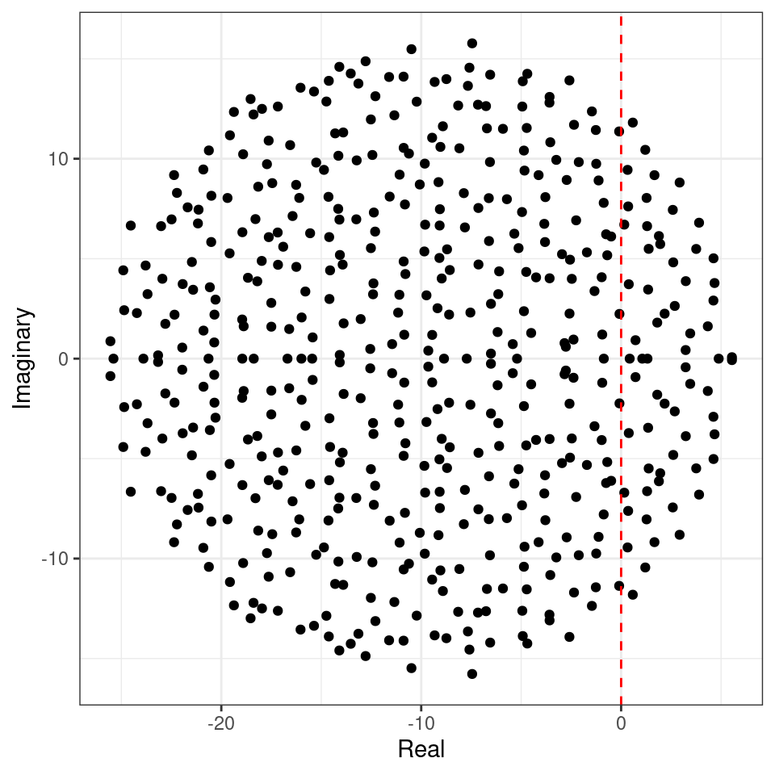
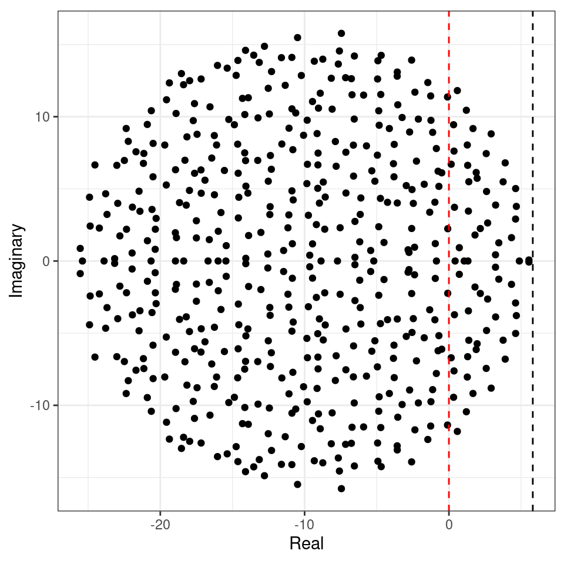
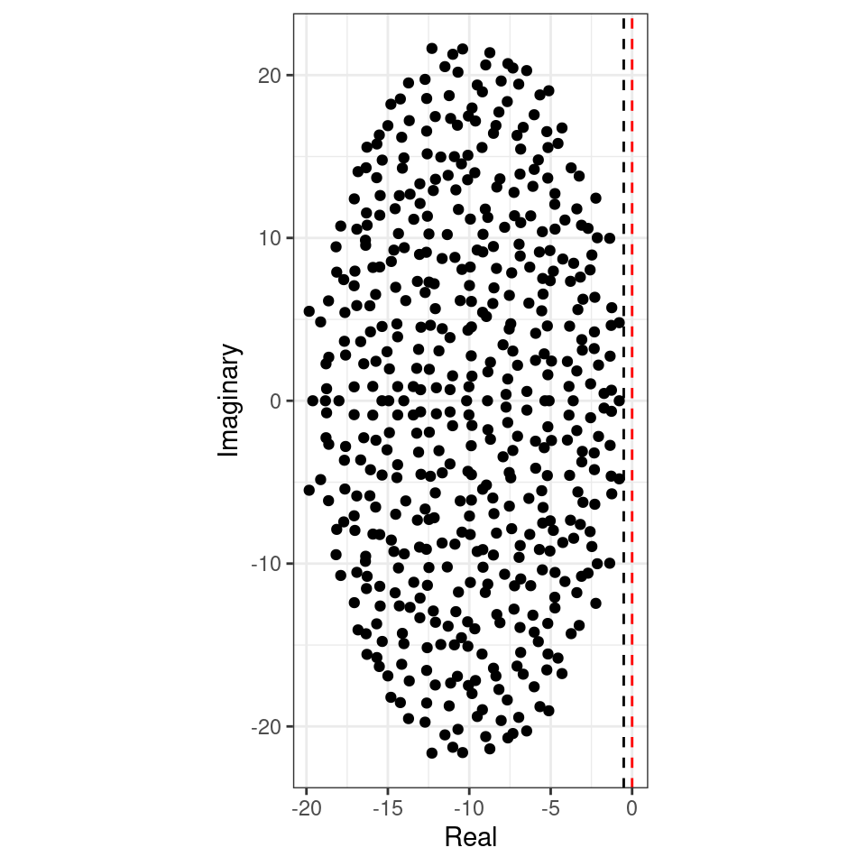

Lecture 4 Stability of large ecological communities
As we have seen before, an equilibrium \(x^\star\) is stable if the community matrix for the equilibrium has all eigenvalues with negative real part. In general, to determine the equilibrium and its stability, we would need to specify all the growth rates (\(r\), \(n\) values), as well as the matrix of interactions (\(A\), \(n^2\) values). This is impractical to do for large systems (though we will try this out later). But can something quite general be said about the limit in which many species are in the community?
May (1972) attempted to answer this question by considering a random community matrix. In a GLV system, the diagonal elements \(m_{ii} = a_{ii} x_i^\star\) are influenced by self-regulation (i.e., as in a carrying capacity), while the off-diagonal elements \(m_{ij} = a_{ij} x_i^\star\) model the effect of species \(j\) on the equilibrium of species \(i\). May considered the following algorithm to build a random community matrix. Take a large community, resting at an unspecified, feasible equilibrium; we build the community matrix by setting:
- \(m_{ij} = 0\) with probability \((1-C)\); with probability \(C\) we draw \(m_{ij}\) from a distribution with mean zero and variance \(\sigma^2\). \(C\) is the proportion of realized connections, termed the “connectance” of the system.
- the diagonal elements are set to \(-d\), modeling self-regulation.
For example, the code uses a normal distribution:
build_May_normal <- function(n, C, d, sigma){
# fill the whole matrix
M <- matrix(rnorm(n * n, mean = 0, sd = sigma), n, n)
# remove connections
M <- M * matrix(runif(n * n) <= C, n, n)
# set diagonals
diag(M) <- -d
return(M)
}Note that the average of the eigenvalues of a matrix \(A\) is given by the average of its diagonal elements \(\frac{1}{n}\sum_i \lambda_i = \frac{1}{n} \text{Tr}(A) = \frac{1}{n} \sum_i A_{ii}\). As such, if \(A = dI + B\), the eigenvalues of \(A\) will be those of \(B\) shifted by \(d\).
We want to determine whether the equilibrium will be stable, given \(n\), \(C\), \(d\) and \(\sigma^2\). To do so, we need to find the location of the “rightmost” eigenvalue of \(M\). For example, let’s plot the eigenvalues of a large matrix:
plot_eigenvalues <- function(M, prediction = NULL){
eig <- eigen(M, only.values = TRUE)$values
dt <- tibble(Real = Re(eig), Imaginary = Im(eig))
pl <- ggplot(dt) + aes(x = Real, y = Imaginary) +
geom_point() +
coord_equal() +
geom_vline(xintercept = 0, colour = "red", linetype = 2)
if (is.null(prediction) == FALSE) {
pl <- pl + geom_vline(xintercept = prediction, colour = "black", linetype = 2)
}
show(pl)
}
set.seed(100) # for reproducibility
# parameters
n <- 500
C <- 0.5
d <- 10
sigma <- 1
M <- build_May_normal(n, C, d, sigma)
plot_eigenvalues(M)
The eigenvalues fall into an almost perfect circle! Turns out, that this is the behavior we should expect, as stated by the so-called “Circular Law”, one of the most beautiful results in random matrix theory.
Circular law: Take a non-symmetric, \(S \times S\) random matrix in which all coefficients \(X_{ij}\) are i.i.d. random variables with \(\mathbb E[X_{ij}] = 0\) and \(\mathbb E[X_{ij}] = 1\). Then, as \(S \to \infty\), the e.s.d. of \({X} / \sqrt{S}\) converges to the circular law:
\[ \mu(\lambda) = \begin{cases} \frac{1}{\pi} \; \; \; \text{if} \; (\text{Re}(\lambda))^2 + (\text{Im}(\lambda))^2 \leq 1\\ 0 \; \; \;\text{ otherwise}. \end{cases} \]
This result can be used to calculate the radius of the eigenvalue distribution of the matrices studied by May: when the off-diagonal coefficients \(M_{ij}\) are 0 with probability \(1-C\) and are sampled independently from a distribution with mean \(0\) and variance \(\sigma^2\) with probability \(C\), we have that \(\mathbb E[M_{ij}] = 0\) and \(\mathbb E[M_{ij}^2] = C \sigma^2\). This means that if we were to divide the coefficients of \({M}\) by \(\sqrt{C \sigma^2}\) we would recover the unit variance, and the matrix would follow the circular law when \(S\) is large. Armed with this, we can calculate the radius: if the radius of \({M} / \sqrt{S C \sigma^2}\) converges to 1 when the matrix is large, then the radius of \({M}\) is approximately \(\sqrt{S C \sigma^2}\). For stability, we need a sufficiently negative diagonal (setting the center of the circle), yielding May’s stability criterion:
\[ \sqrt{S C \sigma^2} < d \]
We can try this on our matrix:

Showing that we accurately approximate the location of the rightmost eigenvalue. Note that, in the case of large \(n\), whenever the circle crosses zero, some eigenvalues will be positive, determining the instability of the equilibrium.
Importantly, the distribution from which the coefficients are sampled does not matter—only that the mean is zero and that the variance is \(\sigma^2\). For example, build the matrix using coefficients from a uniform distribution:
build_May_uniform <- function(n, C, d, sigma){
# fill the whole matrix (sqrt(3) to ensure var = sigma^2)
M <- matrix(runif(n * n, min = -sqrt(3) * sigma, max = sqrt(3) * sigma), n, n)
# remove connections
M <- M * matrix(runif(n * n) <= C, n, n)
# set diagonals
diag(M) <- -d
return(M)
}
# parameters
n <- 500
C <- 0.5
d <- 10
sigma <- 1
M <- build_May_uniform(n, C, d, sigma)
prediction <- sqrt(n * C * sigma^2) - d
plot_eigenvalues(M, prediction)
This property is called universality in random matrix theory.
In ecological communities, the effect of species \(i\) on \(j\) and that of \(j\) on \(i\) are typically not independent (as assumed above): in the case of competition between species, we expect them both to be negative; for consumption, if one is positive, the other is negative, and so forth. A more refined model of a random matrix would therefore sample interactions in pairs from a bivariate distribution. The elliptic law can deal with this case:
Elliptic law: Take a non-symmetric, \(S \times S\) random matrix in which the pairs of coefficients \((X_{ij}, X_{ji})\) are sampled independently from a bivariate distribution defined by a vector of means \(m = (0,0)^t\) and a covariance matrix \(\Sigma = \begin{pmatrix} 1 & \rho\\ \rho & 1 \end{pmatrix}\). Then, as \(S \to \infty\), the e.s.d. of \({X} / \sqrt{S}\) converges to the elliptic law:
\[ \mu(\lambda) = \begin{cases} \frac{1}{\pi (1 - \rho^2) } \quad \text{if} \; \frac{(\text{Re}(\lambda))^2}{(1 + \rho)^2} + \frac{(\text{Im}(\lambda))^2}{(1 -\rho)^2} \leq 1\\ 0 \quad \quad \quad \text{ otherwise} \end{cases} \]
Note that when \(\rho = 0\), the elliptic law reduces to the circular law. Using the elliptic law, Allesina and Tang (2012) were able to extend May’s criterion to ecological networks with different mixtures of interaction types. In particular, the stability criterion becomes:
\[ \sqrt{S C \sigma^2}(1 + \rho) < d \]
To see the elliptic law in action, we can build matrices in which we sample the coefficients in pairs from a bivariate normal distribution:
build_Allesina_Tang_normal <- function(n, C, d, sigma, rho){
# sample coefficients in pairs
pairs <- MASS::mvrnorm(n = n * (n-1) / 2,
mu = c(0, 0),
Sigma = sigma^2 * matrix(c(1, rho, rho, 1), 2, 2))
# build a completely filled matrix
M <- matrix(0, n, n)
M[upper.tri(M)] <- pairs[,1]
M <- t(M)
M[upper.tri(M)] <- pairs[,2]
# determine which connections to retain
Connections <- (matrix(runif(n * n), n, n) <= C) * 1
Connections[lower.tri(Connections)] <- 0
diag(Connections) <- 0
Connections <- Connections + t(Connections)
M <- M * Connections
diag(M) <- -d
return(M)
}We can see that a positive connectance leads to an eigenvalue distribution that describes an horizontally-stretched ellipse (and hence, more difficult to stabilize than the circle):
# parameters
n <- 500
C <- 0.5
d <- 10
sigma <- 1
rho <- 0.4
M <- build_Allesina_Tang_normal(n, C, d, sigma, rho)
prediction <- sqrt(n * C * sigma^2) * (1 + rho) - d
plot_eigenvalues(M, prediction)
Similarly, a negative correlation (e.g., as in predator-prey) would make the system easier to stabilize:
# parameters
n <- 500
C <- 0.5
d <- 10
sigma <- 1
rho <- -0.4
M <- build_Allesina_Tang_normal(n, C, d, sigma, rho)
prediction <- sqrt(n * C * sigma^2) * (1 + rho) - d
plot_eigenvalues(M, prediction)
4.1 Further readings
On random matrices and stability:
- Allesina and Tang (2015) is an opinionated review on applications of random matrices in ecology.
References
Allesina, Stefano, and Si Tang. 2012. “Stability Criteria for Complex Ecosystems.” Nature 483 (7388): 205.
Allesina, Stefano, and Si Tang. 2015. “The Stability–Complexity Relationship at Age 40: A Random Matrix Perspective.” Population Ecology 57 (1): 63–75.
May, Robert M. 1972. “Will a Large Complex System Be Stable?” Nature 238 (5364): 413–14.